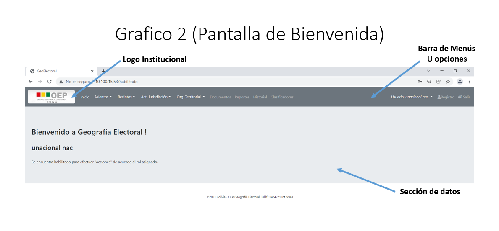

1. Pantalla de Inicio
La presente pantalla permite Ingresar al Sistema a través de un usuario y password, proporcionados por el administrador del sistema. Los tipos de usuario son los siguientes:
Usuario Administrador
Usuario Nacional
Usuario Departamental
Usuario Consulta.
{kind=link}
Una vez registrado el usuario y password, deberá presionar el botón Aceptar, este le permitirá ingresar al sistema con los privilegios de usuario asignado previamente (ejemplo).
Usuario: unacional
Password: unacional ó
Usuario: udepartamental
Password: udepartamental.
2. Pantalla de Bienvenida
La presente pantalla presenta las siguientes secciones o partes:

Logo Institucional, a través del presente logo le permite ingresar a la página oficial del Órgano Electoral Plurinacional (www.oep.org.bo).
Barra de Menús u opciones, este menú de opciones viene con las opciones activas en función al tipo de usuario (admin, nacional, departamental o consulta).
Sección de Datos, en esta sección se muestra toda la información de los datos desplegados a través de las diferentes opciones de la Barra de Menús.
{kind=link}